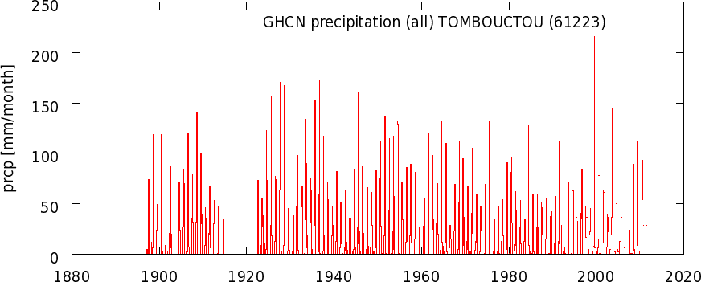
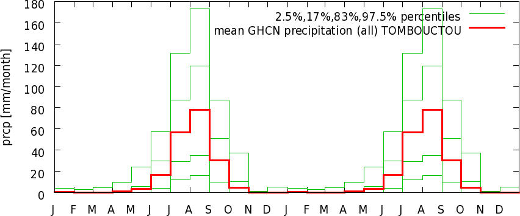

Climate, climate variability and seasonal predictability at one station
You are going to Tombouctou next August, and would like to know
whether to bring an umbrella
- On the page "monthly time station data", select
"precipitation" under "GHCN (all)" and type "Tomb" (you are not sure about the spelling
of the rest of the name) into the field after "stations with a name containing". Press [Get
stations].
- This gives a list of eight stations, the third one is TOMBOUCTOU
MALI (MALI), coordinates: 16.80°N, 3.00°W. Follow the link
"get data".
- The following page gives a time series of precipitation at
Tombouctou from 1897-2003 with a gap at 1915-1921 and incomplete observations the last few years.
TOMBOUCTOU MALI (MALI),
coordinates: 16.80N, -3.00E, 263m,
WMO station code: 61223 TOMBOUCTOU ,
prcp from v2.prcp [mm/month]

- The second plot
is more interesting, it shows that the annual rainfall is concentrated
in August, with an average rainfall of 77.4mm and 95% interval from 15mm to 175mm, quite variable (click on "raw data" to read off the
numbers). The is almost the same as August in De Bilt, both in the mean (83mm) as in variability (15mm to 187mm). Do take an umbrella.
Two annual cycles
computed with all data available, not 30 years

- Clicking on "View per month" (right-hand side) reveals that the
August rainfall has decadal variability: the 1970s and 1980s were
drier than the average (associated with the Atlantic Multidecadal Oscillation and maybe other causes).
However, in the 1990s rainfall came back to
normal. No clear case to leave the umbrella at home. Go back.
- If you want to investigate the connection with El Niño,
follow the link "Correlate with other time series" in the right-hand
menu. Select "NINO3" under "system-defined timeseries", and under
"common options" select the starting month [Jul] and press
[Correlate]. The resulting scatter plot shows that the very wettest
years have all been La Niña years, but the two driest years
have also been during a La Niña. The tercile plot also shows
that there is not much you can say about the chances of a
wet/normal/dry July at Tombouctou if you can predict the NINO3 index.
- The situation is slightly better if you look at the whole rain
season, July-September. Go back to the "common options" and select
[averaging] over [3] months and press [Correlate]. With a strong El
Niño at this time of the year (NINO3>+1.25) there were five
years with drier than average conditions, and one with wetter than
average (1905), so it seems likely it will be drier next time. The
tercile plot gives a forecast of 50:30:20 for a NINO3 index of 1.4.
During a La Niña the spread is greater, with a 20:40:40
forecast for NINO3 at -1.
- Finally, just to make sure, go back to "common options" and change
"lag" to [0:24]. The lag correlations show the NINO3-autocorrelation
function in reverse; nothing interesting here.
- Are there other oceans where the surface temperature was a
predictor for Timbouctou rainfall? Go back to the time series and now
follow the link "Correlate with a field", "only observations". Select
the HadCRUT4 temperature dataset, and again select starting month
[Jul], [averaging] over [3] months (to cut down the noise), it is wise
to also choose lag: [3] months to avoid cause/effect ambiguities.
Press [correlate] and wait a while. Besides the ENSO-region, SST in
the Mediterranean and North Atlantic stand out. However, these
disappear when one takes year-on-year differences ("difference"); so
the interannual variability seems (tenuously) connected to ENSO only.
The time series are probably not long enough, and the data not
homogeneous enough, to say much about the decadal variability. Please
send me the article if you feel you can do something here.
Poor man's global warming fingerprinting
What have been the patterns associated with global warming over the
past 100 years?
- Go to the page with "monthly climate indices" in the right-hand menu.
- Follow one of the links "global average temperature" (they are all very similar).
- Follow the link on "correlate with a field" "only observations" in the right-hand menu.
- Select under "observations" the GISS "1200 km" temperature anomalies,
and choose to plot the "regression". Under "options" select
starting month [Jan], [averaging] over [12] months for yearly
averages.
- The automatic colour-chosing scheme is suboptimal due to the huge
regression coefficient at Svelbard (Spitsbergen), go back and set the contours from
-2.5 to 2.5.
- Now one can see that the world has warmed relatively uniformly
(regression=1). In the Arctic the regression is much larger than one
(vertical mixing and snow-albedo feedback); and the Pacific decadal pattern
and the North Atlantic have been cooling when the rest of the world became warmer.
Also the equatorial eastern Pacific correlates with the global mean temperature,
but here the causality is reversed: El Niño causes a higher global mean
temperature.
- You can compare this to the patterns that climate models
predict. In the right-hand menu, follow the link "Monthly CMIP5 scenario runs".
- Choose your favorite model, select "tas" (temperature of the atmosphere at the surface). Press the button [select field] at the top (or press the key enter in Firefox).
- First generate the world average temperature by filling out [-90], [90], [0], [360] in the form under "Extrcat time series"; press [Make time series].
- Under "investigate this field" in the right-hand menu follow the link "correlate with a time series"
- Select the globally averaged temperature you just generated, and make yearly averages again (if you are registered this has already been filled in).
- Compare the plot with the one for the observations.
The standard effects of El Niño
What were the effects of El Niño and La Niña over the last hundred years?
- Select the NINO3 series in the list of "monthly climate indices"
- Follow the link "Correlate with a field" "only observations"
- Select the CRU Hulme precipitation anomalies, starting month [all], [averaging] over [3] months (traditional seasons), and press [correlate]. Wait a while.
- Note the very strong seasonality in most signals.
- Do the same for temperature.
- Split up the effects of El Niño (index>0) and La
Niña (index<0) if you are in a particularly thorough mood.
- Compare the DJF and JJA temperature and precipitation plots with
the canonical pictures of the effects of El Niño and La Niña based on the
Ropelweski and Halpert articles. Please let me know if you have
abstracted the correlation plots to new, improved, canonical pictures.
(A year later: I made those plots myself.)
{kind=link}
{kind=link}